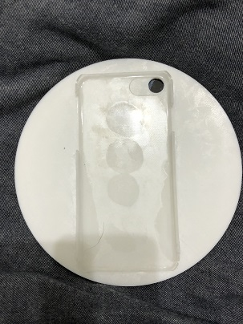
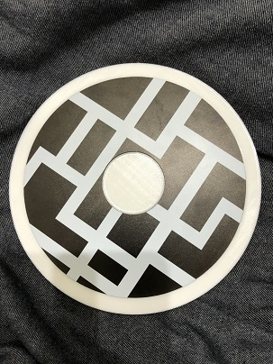
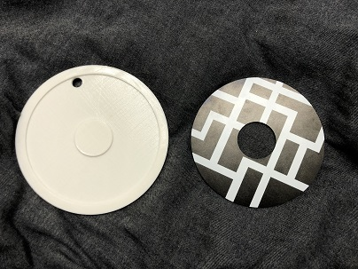

前回の宿題
第6回
最終的なプロトタイプ
  
プロトタイプの説明
これはスマホの縦画面と横画面の差を無くすケースです。
円にする事で縦でも横でも同じ感覚で称することが出来ます。
また、周りからは、縦画面で使用しているのか、横画面で使用しているのか分からないようになっています。
周りの目を気にする事なくゲームや動画を見入ることが出来ます。 ディスク状のカバーを背面のくぼみにはめることで、手軽にカバーの柄を変えることが出来ます。
使用機材
3Dプリンター
UVプリンター
レーザーカッター
班メンバーの作品
たいよーさんの作品